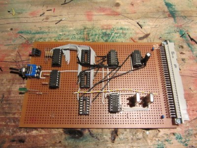

I ever wanted to build my own Computer, but I thought I would never be able to do that. After Ive seen the "RC2014" Computer, I realized that its not that complicated and decided to recreate this Computer. The "Cactus" Computer(using a 6502 CPU and a nice looking Frontpanel) heavily inspired this Computer, especially the Front Panel. Sadly my Computer inst in a working condition right now, and still heavily work in progress.
I decided to use a 19" Subrack and eurocards for it, with a 64-Pin Connector on the back.

More will follow soon...